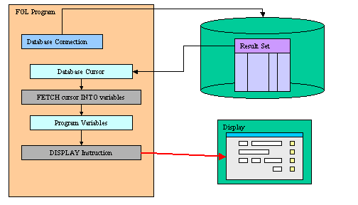

Summary:
See also: Variables, Records, Windows, Forms, Record Input, Display Array
Programs retrieve data from the database into variables with a cursor or a static SELECT statement, and display the variable values to the current form with the DISPLAY instruction:

The DISPLAY TO instruction displays data to form fields explicitly.
DISPLAY expression [,...] TO field-list [,...]
[ ATTRIBUTE ( display-attribute [,...] ) ]
where field-list is :
{ field-name
| table-name.*
| table-name.field-name
| screen-array[line].*
| screen-array[line].field-name
|
screen-record.*
|
screen-record.field-name
}
[,...]
.*
notation.If the variables do not have the same names as the
form fields, you must use the
TO clause to explicitly map the variables to fields. You can list the
fields individually, or you can use the screen-record.*
or screen-record[n].* notation, where
screen-record[n].* specifies all the fields in line
n of a screen array.
In a DISPLAY TO statement, any screen attributes specified in the ATTRIBUTE clause apply to all the fields that you specify after the TO keyword.
In the following example, the values in the p_items program record are displayed in the first row of the s_items screen array:
01 DISPLAY p_items.* TO s_items[1].*The expanded list of screen fields must correspond in order and in number to the expanded list of identifiers after the DISPLAY keyword. Identifiers and their corresponding fields must have the same or compatible data types. For example, the next DISPLAY statement displays the values in the p_customer program record in fields of the s_customer screen record:
01 DISPLAY p_customer.* TO s_customer.*For this example, the p_customer program record and the s_customer screen record require compatible declarations. The following DEFINE statement declares the p_customer program record:
01DEFINE p_customer RECORD02customer_num LIKE customer.customer_num,03fname LIKE customer.fname,04lname LIKE customer.lname,05phone LIKE customer.phone05END RECORD
This fragment of a form specification declares the s_customer screen record:
01ATTRIBUTES02f000 = customer.customer_num;03f001 = customer.fname;04f002 = customer.lname;05f003 = customer.phone;06END
The ATTRIBUTE clause temporarily overrides any default display attributes or any attributes specified in the OPTIONS or OPEN WINDOW statements for the fields. When the DISPLAY statement completes execution, the default display attributes are restored.
The following table shows the display-attributes supported by the DISPLAY TO statement. The display-attributes affect console-based applications only, they do not affect GUI-based applications.
| Attribute | Description |
| BLACK, BLUE, CYAN, GREEN, MAGENTA, RED, WHITE, YELLOW | The TTY color of the displayed data. |
| BOLD, DIM, NORMAL | The TTY font attribute of the displayed data. |
| REVERSE, BLINK, UNDERLINE | The TTY video attribute of the displayed data. |
The REVERSE, BLINK, INVISIBLE, and UNDERLINE attributes are not sensitive to the color or monochrome status of the terminal, if the terminal is capable of displaying these intensity modes. The ATTRIBUTE clause can include zero or more of the BLINK, REVERSE, and UNDERLINE attributes, and zero or one of the other attributes. That is, all of the attributes except BLINK, REVERSE, and UNDERLINE are mutually exclusive.
The DISPLAY statement ignores the INVISIBLE attribute, regardless of whether you specify it in the ATTRIBUTE clause.
The DISPLAY BY NAME instruction displays data to form fields explicitly by name.
DISPLAY BY NAME { variable | record.* } [,...]
[ ATTRIBUTE ( display-attribute [,...] ) ]
If the variables to be displayed have the same name as form fields, you can use the BY NAME clause. The BY NAME clause binds the fields to variables. To use this clause, you must define variables with the same name as the form fields where they will be displayed. The language ignores any record name prefix when matching the names. The names must be unique and unambiguous; if not, this option results in an error, and the runtime system sets STATUS to a negative value.
For example, the following statement displays the values for the specified
variables in the
form fields with corresponding names
(company and address1):
01 DISPLAY BY NAME p_customer.company, p_customer.address1This BY NAME clause displays data to the screen fields of the default screen records. The default screen records are those having the names of the tables defined in the TABLES section of the form specification file. To use a screen array, you define a screen array in addition to the default screen record. This default screen record holds only the first line of the screen array.
For example, the following DISPLAY statement displays the ordno variable only in the first line of the screen array (the default screen record):
01 DISPLAY BY NAME p_stock[1].ordnoTo display ordno in all elements of the screen array, you can use the DISPLAY ARRAY statement, or DISPLAY TO, as in the next example:
01FOR i=1 TO 1002DISPLAY p_stock[i].ordno TO sc.stock[i].ordno03...04END FOR
The following table shows the display-attributes supported by the DISPLAY BY NAME statement:
| Attribute | Description |
| BLACK, BLUE, CYAN, GREEN, MAGENTA, RED, WHITE, YELLOW | The color of the displayed data. |
| BOLD, DIM, NORMAL | The font attribute of the displayed data. |
| REVERSE, BLINK, UNDERLINE | The video attribute of the displayed data. |
The CLEAR FORM instruction clears all fields in the current form.
CLEAR FORM
01MAIN02OPEN WINDOW w1 AT 1,1 WITH FORM "custlist"03CLEAR FORM04CLOSE WINDOW w105END FOR
The CLEAR field instruction clears specific fields in the current form.
CLEAR field-list
where field-list is :
{ field-name
| table-name.*
| table-name.field-name
| screen-array[line].*
| screen-array[line].field-name
|
screen-record.*
|
screen-record.field-name
}
[,...]
01FOR i=1 TO 1002CLEAR s_items[i].*03END FOR